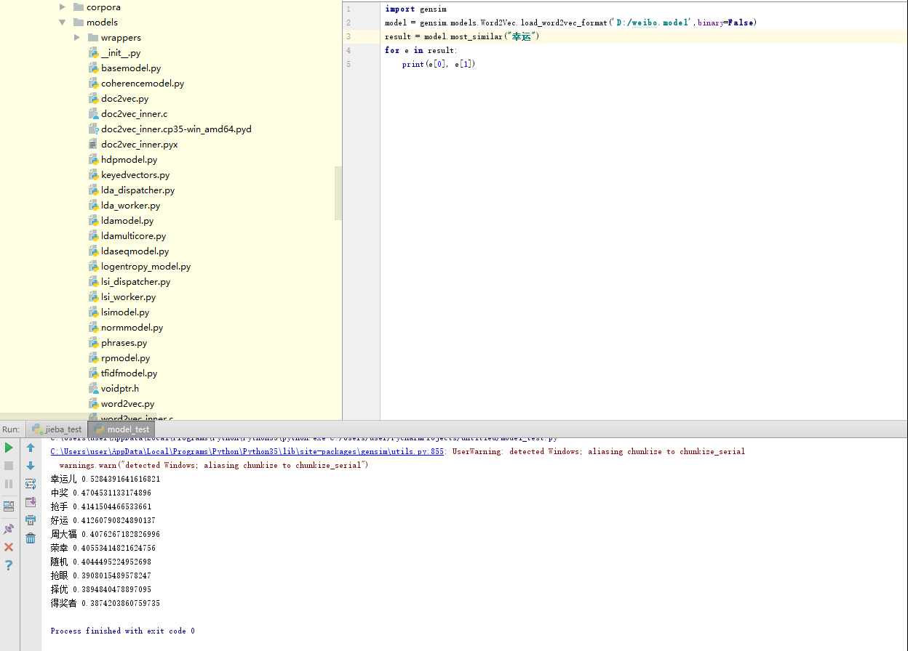
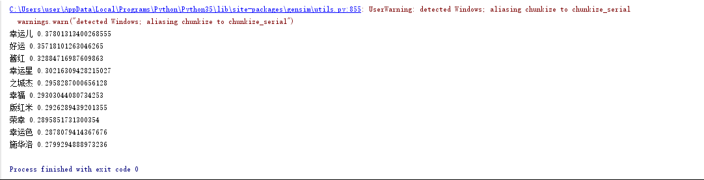
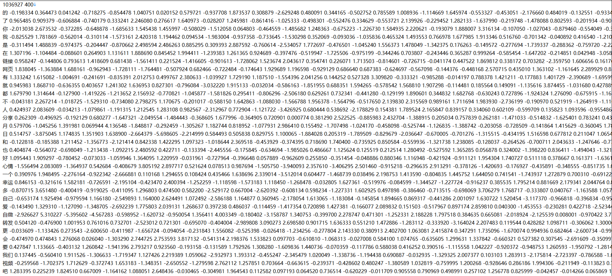

<!DOCTYPE html>
<html>
<head><meta name="generator" content="Hexo 3.9.0">
  <meta charset="utf-8">
  
<!-- Google Analytics -->
<script type="text/javascript">
(function(i,s,o,g,r,a,m){i['GoogleAnalyticsObject']=r;i[r]=i[r]||function(){
(i[r].q=i[r].q||[]).push(arguments)},i[r].l=1*new Date();a=s.createElement(o),
m=s.getElementsByTagName(o)[0];a.async=1;a.src=g;m.parentNode.insertBefore(a,m)
})(window,document,'script','//www.google-analytics.com/analytics.js','ga');

ga('create', 'UA-86850493-1', 'auto');
ga('send', 'pageview');

</script>
<!-- End Google Analytics -->


  
  <title>使用微博语料训练词向量 | Geek boood&#39;s blog</title>
  <meta name="viewport" content="width=device-width, initial-scale=1, maximum-scale=1">
  <meta name="description" content="去年底通过一个叫爬盟的神奇网站获得了一些微博的语料数据。这个网站采用众包爬取的方式，每个人爬取一些数据并上传到网站上，获得自己爬取的数据和积分，再通过积分下载别人爬取的数据。这个网站从2012年开始有第一批数据，到现在已经有五年了。根据推算，总共爬取TB级的数据（目测超过10TB），估计有数十亿甚至超过百亿的数据。我慢慢的也积累了一些数据，并用这些数据训练了词向量。我先使用正则表达式过滤出中文字符">
<meta property="og:type" content="article">
<meta property="og:title" content="使用微博语料训练词向量">
<meta property="og:url" content="https://geekboood.github.io/2017/03/25/使用微博语料训练词向量/index.html">
<meta property="og:site_name" content="Geek boood&#39;s blog">
<meta property="og:description" content="去年底通过一个叫爬盟的神奇网站获得了一些微博的语料数据。这个网站采用众包爬取的方式，每个人爬取一些数据并上传到网站上，获得自己爬取的数据和积分，再通过积分下载别人爬取的数据。这个网站从2012年开始有第一批数据，到现在已经有五年了。根据推算，总共爬取TB级的数据（目测超过10TB），估计有数十亿甚至超过百亿的数据。我慢慢的也积累了一些数据，并用这些数据训练了词向量。我先使用正则表达式过滤出中文字符">
<meta property="og:locale" content="default">
<meta property="og:image" content="https://geekboood.github.io/2017/03/25/使用微博语料训练词向量/1.png">
<meta property="og:image" content="https://geekboood.github.io/2017/03/25/使用微博语料训练词向量/2.png">
<meta property="og:image" content="https://geekboood.github.io/2017/03/25/使用微博语料训练词向量/3.png">
<meta property="og:updated_time" content="2019-07-31T04:06:54.489Z">
<meta name="twitter:card" content="summary">
<meta name="twitter:title" content="使用微博语料训练词向量">
<meta name="twitter:description" content="去年底通过一个叫爬盟的神奇网站获得了一些微博的语料数据。这个网站采用众包爬取的方式，每个人爬取一些数据并上传到网站上，获得自己爬取的数据和积分，再通过积分下载别人爬取的数据。这个网站从2012年开始有第一批数据，到现在已经有五年了。根据推算，总共爬取TB级的数据（目测超过10TB），估计有数十亿甚至超过百亿的数据。我慢慢的也积累了一些数据，并用这些数据训练了词向量。我先使用正则表达式过滤出中文字符">
<meta name="twitter:image" content="https://geekboood.github.io/2017/03/25/使用微博语料训练词向量/1.png">
  
    <link rel="alternate" href="/atom.xml" title="Geek boood&#39;s blog" type="application/atom+xml">
  
  
    <link rel="icon" href="/favicon.png">
  
  
    <link href="//fonts.googleapis.com/css?family=Source+Code+Pro" rel="stylesheet" type="text/css">
  
  <link rel="stylesheet" href="/css/style.css">
</head>
</html>
<body>
  <div id="container">
    <div id="wrap">
      <header id="header">
  <div id="banner"></div>
  <div id="header-outer" class="outer">
    <div id="header-title" class="inner">
      <h1 id="logo-wrap">
        <a href="/" id="logo">Geek boood&#39;s blog</a>
      </h1>
      
    </div>
    <div id="header-inner" class="inner">
      <nav id="main-nav">
        <a id="main-nav-toggle" class="nav-icon"></a>
        
          <a class="main-nav-link" href="/">Home</a>
        
          <a class="main-nav-link" href="/archives">Archives</a>
        
      </nav>
      <nav id="sub-nav">
        
          <a id="nav-rss-link" class="nav-icon" href="/atom.xml" title="RSS Feed"></a>
        
        <a id="nav-search-btn" class="nav-icon" title="Search"></a>
      </nav>
      <div id="search-form-wrap">
        <form action="//google.com/search" method="get" accept-charset="UTF-8" class="search-form"><input type="search" name="q" class="search-form-input" placeholder="Search"><button type="submit" class="search-form-submit">&#xF002;</button><input type="hidden" name="sitesearch" value="https://geekboood.github.io"></form>
      </div>
    </div>
  </div>
</header>
      <div class="outer">
        <section id="main"><article id="post-使用微博语料训练词向量" class="article article-type-post" itemscope itemprop="blogPost">
  <div class="article-meta">
    <a href="/2017/03/25/使用微博语料训练词向量/" class="article-date">
  <time datetime="2017-03-24T16:00:00.000Z" itemprop="datePublished">2017-03-25</time>
</a>
    
  </div>
  <div class="article-inner">
    
    
      <header class="article-header">
        
  
    <h1 class="article-title" itemprop="name">
      使用微博语料训练词向量
    </h1>
  

      </header>
    
    <div class="article-entry" itemprop="articleBody">
      
        <p>去年底通过一个叫爬盟的神奇网站获得了一些微博的语料数据。这个网站采用众包爬取的方式，每个人爬取一些数据并上传到网站上，获得自己爬取的数据和积分，再通过积分下载别人爬取的数据。这个网站从2012年开始有第一批数据，到现在已经有五年了。根据推算，总共爬取TB级的数据（目测超过10TB），估计有数十亿甚至超过百亿的数据。我慢慢的也积累了一些数据，并用这些数据训练了词向量。<br>我先使用正则表达式过滤出中文字符，再进行分词，最后使用gensim训练出词向量。</p>
<a id="more"></a>
<p>刚开始使用了jieba分词，分词速度很快，但是感觉效果不是很好，很多断句都是错误的。然后换用hanlp进行分词，感觉好很多，但仍然存在极少的错误。<br>下面使用几行代码测试一下投入了2GB语料数据训练出的词向量。这个模型文件占据大约300mb的空间。在模型文件中计算和”幸运”最相近的词，如下图所示：<br><br>可以看出和幸运最相近的词是幸运儿，然后是中奖，然后是抢手、好运、周大福、荣幸。至于为什么周大福也在列表里，我推测有可能是因为周大福在微博上做了很多广告，推送了太多内容：）。所以这里出现了使用微博数据训练语料的局限性：微博上有很多垃圾广告信息，而且数量还不少，再加上那些水军，会严重干扰计算结果。<br>于是我又投入了20GB语料数据进行训练，结果如下：<br><br>可以看出相关的结果多了很多，但是分词好像出现了一些问题，会出现”之城杰”等莫名其妙的词语。</p>
<p>总体上面来讲，中文词向量的训练比英文难很多，首先就出现在分词上面。其次还有繁体中文转简体中文的问题。最后，提高语料的规模确实有一定帮助。等抽出时间来可以把语料规模提高到100GB，去掉一些推广的内容（这个目前还没什么思路），再研究研究用那种分词方式更好。</p>
<p>总体上面来讲，中文词向量的训练比英文难很多，首先就出现在分词上面。其次还有繁体中文转简体中文的问题。最后，提高语料的规模确实有一定帮助。等抽出时间来可以把语料规模提高到100GB，去掉一些推广的内容（这个目前还没什么思路），再研究研究用那种分词方式更好。<br>接下来再看一看词向量模型文件的内容，如下图：<br><br>第一行两个数字分别是词的个数和词向量的维数，这里有1036927个词，每个词的向量维数为400维。<br>在这里还有一个问题，每次寻找相似的词时都要遍历计算一遍103w个词，非常耗时间，而且这个计算相似度的程序没有对多线程进行优化。如果对多线程进行优化，或者用GPU进行计算，能够大大节省时间。如果词的个数较少的话，或许可以打表。<br>总而言之，训练词向量并寻找相似的词是比较基础的应用。但正因如此也是比较重要的一环。像gensim给出的例子是使用维基百科进行训练，可是中文维基百科内容较少，比较担心训练出来的效果。微博语料虽然多，但是广告等无关信息也很多。如果过滤掉这些内容的话，感觉应该能够训练出比较理想的模型。或许可以尝试爬取百度百科。<br>相关代码以后有时间整理出来再发吧。。。</p>

      
    </div>
    <footer class="article-footer">
      <a data-url="https://geekboood.github.io/2017/03/25/使用微博语料训练词向量/" data-id="cjyqqoqut00002usfgqcooqay" class="article-share-link">Share</a>
      
      
    </footer>
  </div>
  
    
<nav id="article-nav">
  
    <a href="/2017/09/04/微博与Elastic的亿级数据实践/" id="article-nav-newer" class="article-nav-link-wrap">
      <strong class="article-nav-caption">Newer</strong>
      <div class="article-nav-title">
        
          微博与elastic的亿级数据实践
        
      </div>
    </a>
  
  
    <a href="/2017/02/13/在Python中使用pytesseract进行简单的OCR/" id="article-nav-older" class="article-nav-link-wrap">
      <strong class="article-nav-caption">Older</strong>
      <div class="article-nav-title">在python中使用pytesseract进行简单的OCR</div>
    </a>
  
</nav>

  
</article>

</section>
        
          <aside id="sidebar">
  
    

  
    

  
    
  
    
  <div class="widget-wrap">
    <h3 class="widget-title">Archives</h3>
    <div class="widget">
      <ul class="archive-list"><li class="archive-list-item"><a class="archive-list-link" href="/archives/2019/07/">July 2019</a></li><li class="archive-list-item"><a class="archive-list-link" href="/archives/2017/09/">September 2017</a></li><li class="archive-list-item"><a class="archive-list-link" href="/archives/2017/03/">March 2017</a></li><li class="archive-list-item"><a class="archive-list-link" href="/archives/2017/02/">February 2017</a></li><li class="archive-list-item"><a class="archive-list-link" href="/archives/2017/01/">January 2017</a></li><li class="archive-list-item"><a class="archive-list-link" href="/archives/2015/07/">July 2015</a></li></ul>
    </div>
  </div>


  
    
  <div class="widget-wrap">
    <h3 class="widget-title">Recent Posts</h3>
    <div class="widget">
      <ul>
        
          <li>
            <a href="/2019/07/30/BERT相关的一些实践/">BERT相关的一些实践</a>
          </li>
        
          <li>
            <a href="/2019/07/30/用Kubernetes建立实验集群/">用Kubernetes建立实验集群</a>
          </li>
        
          <li>
            <a href="/2019/07/30/移动端深度学习的现状与分析/">移动端深度学习的现状与分析</a>
          </li>
        
          <li>
            <a href="/2017/09/04/微博与Elastic的亿级数据实践/">微博与elastic的亿级数据实践</a>
          </li>
        
          <li>
            <a href="/2017/03/25/使用微博语料训练词向量/">使用微博语料训练词向量</a>
          </li>
        
      </ul>
    </div>
  </div>

  
</aside>
        
      </div>
      <footer id="footer">
  
  <div class="outer">
    <div id="footer-info" class="inner">
      &copy; 2019 Geek boood<br>
      Powered by <a href="http://hexo.io/" target="_blank">Hexo</a>
    </div>
  </div>
</footer>
    </div>
    <nav id="mobile-nav">
  
    <a href="/" class="mobile-nav-link">Home</a>
  
    <a href="/archives" class="mobile-nav-link">Archives</a>
  
</nav>
    

<script src="//ajax.googleapis.com/ajax/libs/jquery/2.0.3/jquery.min.js"></script>


  <link rel="stylesheet" href="/fancybox/jquery.fancybox.css">
  <script src="/fancybox/jquery.fancybox.pack.js"></script>


<script src="/js/script.js"></script>


  </div>
</body>
</html>